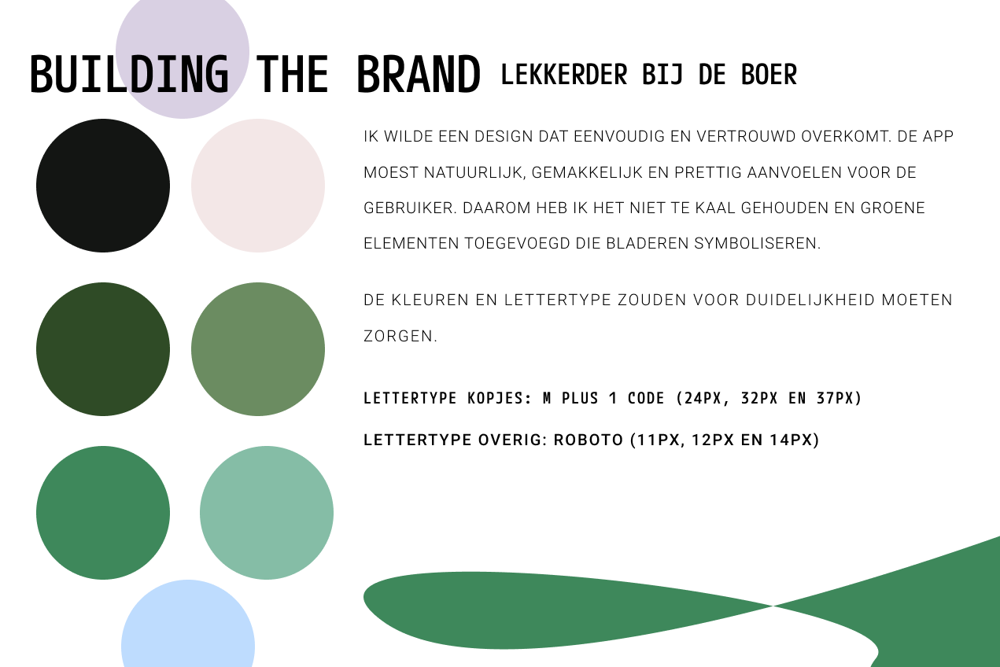
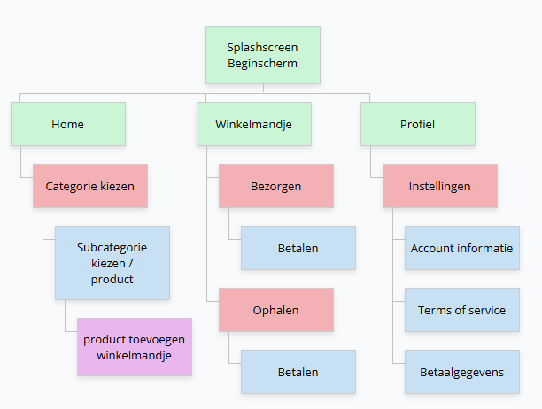

Overzicht project

Hoe zorg ik ervoor dat er meer connectie is tussen de consument en de boer?
Design proces
Onderzoek
Ik ging op zoek naar boerderijen die hun producten verkopen en keek of ze een website hadden. Daaruit bleek dat veel kleine boerenwinkels geen website hebben en vooral gebruikmaken van borden langs de weg.
Wireframe
Ik begon met het maken van wireframes om de structuur van de app neer te zetten. Ik koos voor een eenvoudige online winkel app.
Visual Design
Het begon bij mij met het maken van een kleur palet voor de app. Ik wou iets doen met groen, want naar mijn mening associeer ik dat met boerderij en natuurlijke producten. Dit was de branding die mij het meeste mee gaf.
Testen
Nadat ik de app interactief had gemaakt op Figma had ik aan vrienden en familie gevraagt hoe zij de app zouden navigeren. Feedback gevraagt en dat verwerkt.


Kleurpalet & Typografie

Sitemap

Conclusie
De app biedt een gebruiksvriendelijke manier om boeren te verbinden en te helpen bij het vinden van lokale alternatieve van supermarkten. Het is een nuttig hulpmiddel voor boeren en consummers alike.